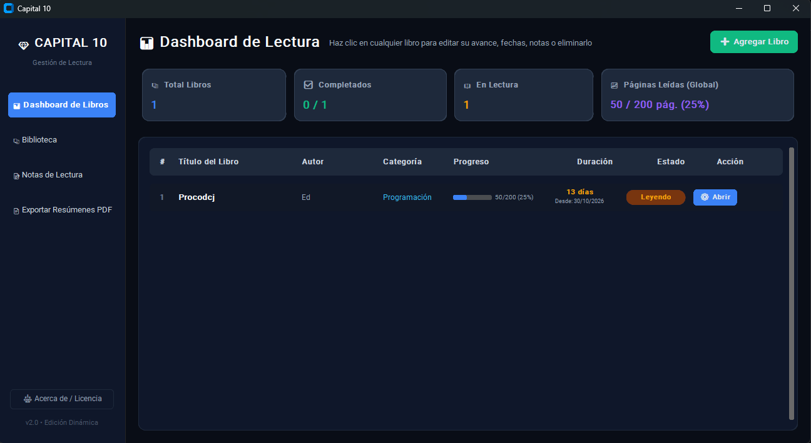

Dashboard de Lectura
Panel principal con métricas globales en tiempo real (total de libros, completados, en lectura y páginas leídas), barras de progreso individual, cálculo automático de duración en días y gestión rápida para agregar, editar o eliminar libros.